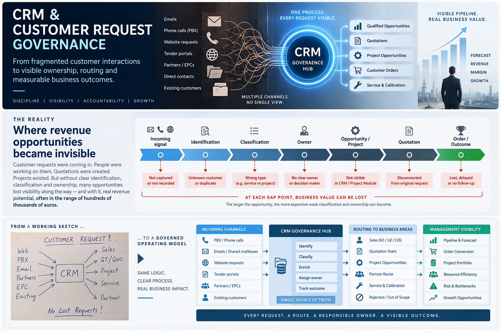

Identification gap
The commercial signal is not recognized.
An incoming request may be handled as a general enquiry, service request or isolated quotation although it represents a wider sales or project opportunity.
A governance model connecting incoming customer demand, classification, ownership, commercial routing and visible business outcomes.

A phone call, email, website request, tender invitation, partner discussion or project enquiry may represent the beginning of a significant commercial opportunity.
If that signal is not identified, classified and assigned correctly, the opportunity may lose visibility before it reaches the pipeline, quotation process or project portfolio. The business may still be working, but management cannot see one complete commercial story.
The analysis exposed a chain of classification, ownership and routing gaps capable of hiding orders and project opportunities with potential values reaching hundreds of thousands of euros. The central problem was not a lack of activity. It was the lack of a single visible commercial trace.
An incoming request may be handled as a general enquiry, service request or isolated quotation although it represents a wider sales or project opportunity.
If nobody is accountable for deciding the commercial route, responsibility can remain between Sales, quotation teams, partners, service and management.
Work may continue in email, files, quotation registers or personal follow-ups while pipeline status, project linkage and management visibility remain incomplete.
Customer requests were being processed through multiple operational contours. Quotations could be created, partners involved and projects discussed.
But the complete path from initial request to classification, decision, accountable owner, quotation, project and final outcome was not consistently visible in one place.
In practice, answering a simple management question often required manual clarification across people, mailboxes, files and systems.
PBX, shared mailboxes, direct emails, websites, tender portals, partners, EPCs and existing customer contacts.
Sales, quotation teams, partner routes, service activities, project files, CRM, 1C and informal follow-up channels.
The critical bottleneck was often the question: who decides what this request becomes?
A quotation or project activity could exist without a clearly linked incoming request, opportunity history or registered project record.
Weak classification and unclear ownership created a real risk of delayed, poorly followed or invisible opportunities with significant commercial value.
The target model does not replace Sales, quotation teams, partners or Service. It creates one governance layer that makes the route, responsible owner, current state and final outcome visible.
Requests must remain traceable regardless of the channel through which the customer entered the business.
CRM becomes the central governance layer for understanding what arrived, where it should go and who owns the next step.
Not every request becomes an order, but every request should finish with a visible and explainable commercial state.
The operating model creates a visible chain from the first customer signal through classification, responsible ownership, commercial execution and management reporting.
Distinguish RFQs, projects, service requests, partner routes, duplicates and out-of-scope cases.
Define who owns the route, next action and commercial responsibility.
Link calls, meetings, quotations, projects, partner activity and customer follow-ups.
Record whether the request progressed, was redirected, rejected, closed or converted.
One of the most critical findings was not technical. The process lacked a consistently defined owner for key commercial decisions, especially before a potential project was formally registered.
Governance therefore had to define not only system fields and reports, but also who validates, who decides, who acts and who escalates.
The model was supported by a short, structured review rhythm connecting customer activity, order status and project data.
The objective was not additional reporting. The objective was early visibility of gaps, bottlenecks, owners and next actions.
Customer contact, follow-up, current stage, responsible owner and next action.
Confirmation that commercial status reflects the actual position and remains linked to its source.
Validation that project-related activity is registered, connected and visible in the commercial portfolio.
The initiative moved the conversation beyond CRM data entry. It showed how customer intake, classification, accountable decisions and process visibility influence the quality of the entire commercial pipeline.
The most important result was a practical operating model for making fragmented commercial activity visible and actionable.
CRM governance starts before an opportunity enters the formal pipeline. It begins when the business recognizes the customer signal, decides what it represents and assigns responsibility for turning that signal into a visible outcome.
Explore a practical approach to customer request governance, CRM process design, ownership, pipeline quality, reporting and business-system transformation.